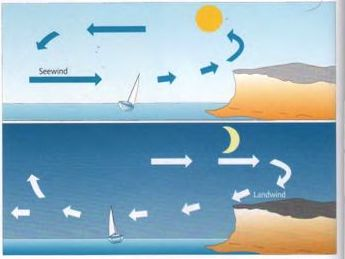

Низкое давление образуется над областями, которые нагреваются сильнее, чем окружающие территории.
Высокое давление образуется над областями, которые охлаждены сильнее, чем окружающие территории.
Если изобары расположены близко друг к другу, градиент давления большой и ветер будет сильным.
Если изобары расположены далеко друг от друга, градиент давления небольшой и возможны лишь слабые ветры.
Постоянное или медленно повышающееся давление обещает период хорошей погоды.
Постоянно падающее давление предвещает плохую погоду, быстрое падение — обычно шторм.
Береговой и морской ветер, грозы
Ежедневное солнечное нагревание суши и воды вызывает локальную ветровую систему — термические ветры. Они возникают потому, что суша нагревается быстрее, чем вода, но также быстрее и остывает. Под действием солнечного излучения над сушей образуется небольшая область низкого давления, которая заполняется более прохладным морским воздухом. Возникает морской ветер. Он дует с моря на сушу и достигает наибольшей силы ранним днём. С заходом солнца он стихает.
Грозы

Предупреждения о шторме
Длинная серия вспышек: предварительное предупреждение.